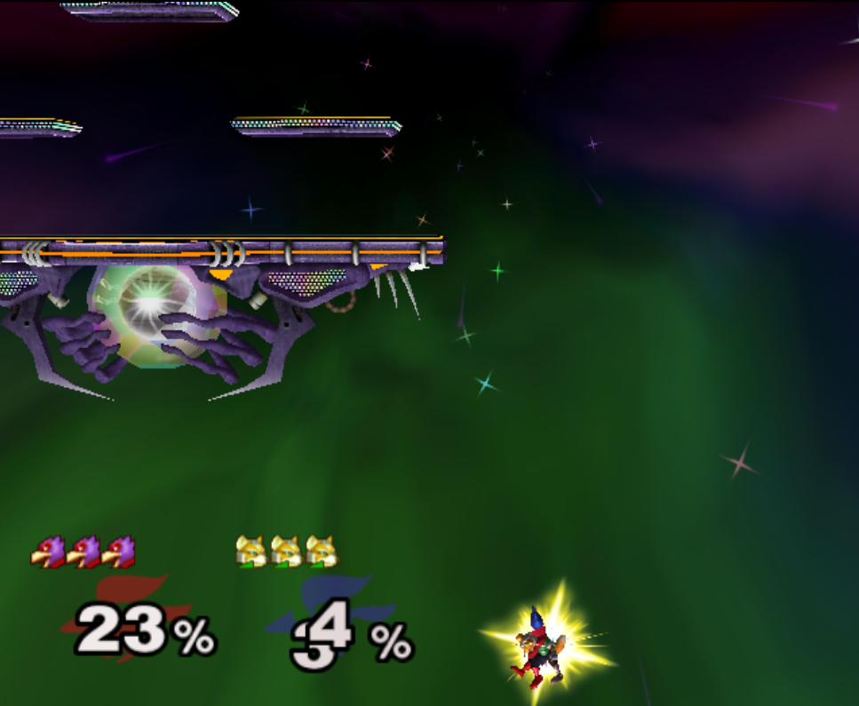
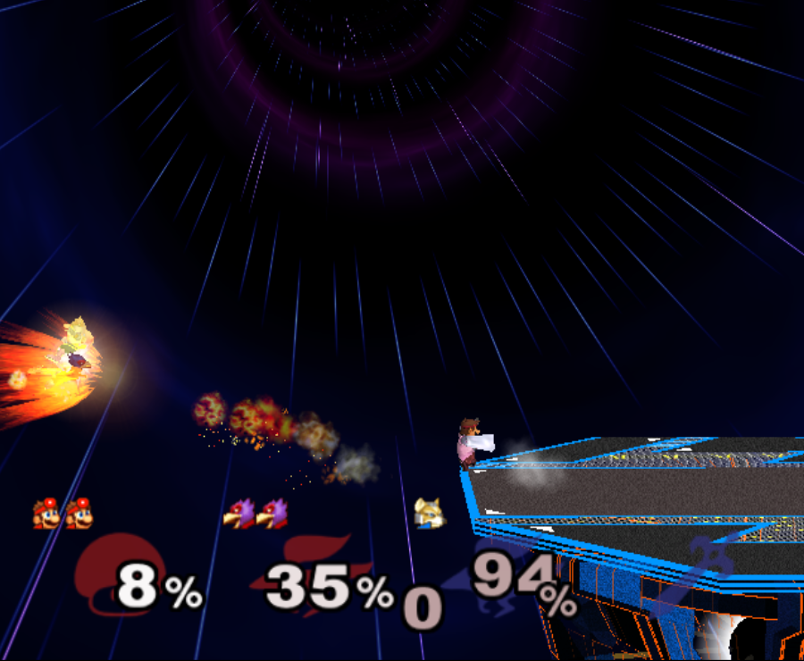
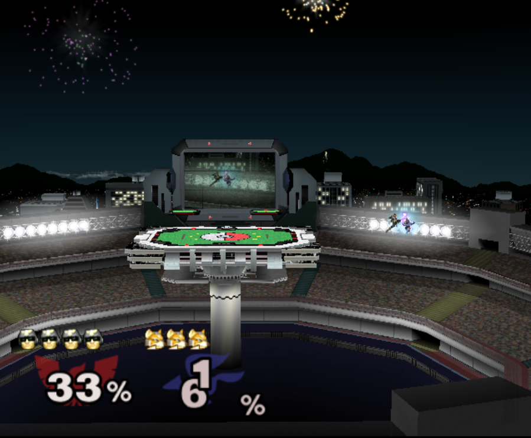

STARS ALIGNED TAS
Table of Contents
- STARS ALIGNED - A Human Theory TAS Combo Video (Annotations)
- The Premise
- Combo Annotations
- Upthrow Tripleshine
- Walljump nair dair
- Fox reverse laser uptilt -> invisible shine land grab
- Fox Dropzone Laser Shinelock
- Peach Bomb Pull Combo
- Falcon Fsmash Windmill Glitch
- Fox Pivot Downtilt vs Marth
- Doctor Mario Cape Glitch Edgeguard
- Charge Shot Deflect Dair
- Shine oos -> Edgecancel sideB combo w/ laser land
- Fox Shine sh bair -> scarjump shine turnaround bair
- Falcon Tech Chase Edgecancel Knee Instant Walljump
- Quad Reverse Fair to Dair
- Pokemon Stadium Janky Slide Thing
- Waveshine Samus -> SideB into bomb
- Pikachu ICG edgeguard
- Peach Saturn Shield Pressure
- Falco double walljump dair
STARS ALIGNED - A Human Theory TAS Combo Video (Annotations)
Draft: v1.5 | Posted: 10/14/2018 | Updated: 11/16/2018 | confidence of success: 85% | estimated time to completion: 09/15/2018 | importance: Medium/High
Below are the annotations for my Human Theory TAS Combo Video. This is a relatively ambitious project and I think warrants a sort of detailed write-up, but things happen too quickly in SSBM to annotate things at the frame level so I've written the annotations seperately in this document.
The Premise
The idea behind this combo video is basically "600 Hours, but up-front about it". I set out to make a multi-character TAS Combo Video that only included combos and techniques that could feasibly be performed by humans, if the stars aligned to grant them the absolutely perfect setup with the absolutely perfect read. I remember when I heard that Scrumpy faked his video I felt monumentally disappointed, since I thought that if I were to TAS a humanlike combo video I would've ended up with one much cooler than Scrumpy's.
So, here we are, putting my money where my mouth is.
As a general rule of thumb, if something felt too ridiculous to do RTA I recorded it RTA to make sure it was reasonable. People that play me in person can attest I regularly attempt things like invisible shine land upsmash / pivot dtilt / etc, so I hope it's not too ridiculous to say that a good chunk of this video was recorded in real time (although, admittedly, with many attempts).
Combo Annotations
Upthrow Tripleshine
This is actually one of Crush's earlier things, and he's done it in tournament several times. He dubbed it "the cumspike". The idea is that if they hold in, you can do the second shine a little delayed so that you can bypass jumpsquat on the third shine with doublejump shine.
A few other people have landed this in an odd friendly or two (I think I remember CDK getting it on netplay but I can't find the clips); it's definitely humanly possible - just very hard.
Walljump nair dair
The clip mostly speaks for itself, I think, not that much is really going on here. It's sort of hard to tell from the video, but Falco does nair -> dair here which I have highlighted in a helpful image here:

Fox reverse laser uptilt -> invisible shine land grab
This clip has a few neat things in it.
The laser here is essentially doing the same thing as empty land turnaround uptilt, but one frame faster due to the laser turning you around in midair, plus it looks awesome (credits to sleepyk for showing me).
Upthrow invisible shine grab sounds like it's TAS only but the timing for it on YS is actually pretty RTA viable; lots of foxes are capable of doing this, and it's one of the key parts I recorded RTA just to be safe that it was feasible.
The ending is scarjump reverse bair -> shine turnaround bair which is sorta risky but definitely feasible.
Fox Dropzone Laser Shinelock
The full combo is pretty standard except for the Dash JC Waveshine tech trap on DI away (nobody ever techs this unless you play multiple sessions with them, shoutouts to Vickram/R2Dliu/lpac). Waveshine dtilt on missed tech is generally better than jab reset since you can't sdi out of it (Leffen does this a good amount).
For more on this mechanic you can see my video Shinelock Punishes. The idea is essentially that you fire a laser, clip their shine to cause reflect which locks them there for 20 frames, and hit them during that time. This is easy enough on stage because laser has autocancel lag, but offstage it's a little trickier.
The crux of this combo is the bthrow into dropzone laser -> doublejump shine. The frame data for this is as follows:
Fox's Laser Animation: 36 Frames
Laser emerges Frame 10
Laser Reflect Animation: 20 Frames
So in a vaccum this is feasible to hit the laser on the shine, since the first few frames of running off the stage are indistinguishable from going to grab ledge and you can't react to the laser animation (human reaction time is ~12-15 frames). However, it doesn't seem feasible to connect this, since it would require the laser to travel for 6 frames for the string to be true.
However, the true gimmick of this clip is that if you press jump + release B too early during aerial reflect (319) you directly enter the aerial drop shine animation (320) which is another 18 frames in which you are not actionable.
So you could actually do it against a human, but you should never, ever try.
Peach Bomb Pull Combo
There's a couple cool things about this clip that aren't immediately apparent.
The first of which is the fc nair which is done from sub-float, which allows you to get lower to the ground at the expense of your doublejump.
The really psycho thing about the subfloat fc nair here is that the grab afterwards is fully guaranteed (Falcon buffers roll out in this clip) because the nair is +4 and falcon's roll isn't invulnerable until frame 4. There's no counterplay here, you've already lost the situation if you shield this nair.
EDIT: A youtube reply from Tetra brings a short correction to the above. Falcon can spotdodge here to avoid the grab, but falcons spotdodge is so long that a second grab immediately afterwards will connect at the spacing in the video. At somewhat more ambiguous spacings, as CAUP documents here, there's a hilarious little situation where the second grab will whiff if falcon spotdodges because of falcon's movement into the Z axis. However, since Peach tried to grab this frame, she has more frame advantage than last time and can simply grab a third time, so +4 aerial -> three grabs in a row will yield grab vs spotdodge. On another note, forward roll abuses Z axis in a similar way, which is probably the proper counterplay to +4 aerial -> grab. So this isn't entirely guaranteed like I mentioned, but its very likely and at best falcon gets a 50/50 escape tool with forward roll through peach (yikes).
The second cool thing about this clip is the first fc upair, which is done using a Druggedfox fastfall.
This upair contrasts with the ones done later on in the clip, which are visibily slower (but during a combo where it's less important to eke out every frame of advantage possible).
Finally there's the edgecancel bomb pull, which is then upthrown against the wonky YS ledge to keep it around the falcon upB trajectory. Worth noting is that turnips cannot do this - they lose their hitbox when they bank off of walls - but bombs can do this.
Falcon Fsmash Windmill Glitch
Some characters have moves with weird properties when the windmill vanishes from underneath them. I know this is also affected by Marth's 4th hit dancing blade, as well as Game and Watch's Roll (????).
I get the last possible frame to get the most vertical movement but you can get varying amounts of speed depending on how close to the last frame you get.
Here's a funny image of falcon punch in the skybox.

Fox Pivot Downtilt vs Marth
Unlike pivot uptilt, pivot dtilt is perfectly RTA Viable with Quarter Circle "Gravy" pivots on GCC. The funny part of this interaction at the start is that Marth's dash attack whiffs here due to the Z axis, which allows Fox to outspace it using dtilt.
{kind=link}


Other notable things in this clip are CC -> Dash JC shine vs Marth's fair out of hitstun (KJH does this vs sheik moves sometimes), doubleshine -> turnaround -> wavedash to ledge (which afaik nobody does despite it being relatively easy and quicker compared to other methods of reaching ledge here) and Doraki Walljump bair -> Shine TA bair. Worth noting about this bair is that it's actually invulnerable, which is why it doesn't trade with Marth's fair in this clip.

Doctor Mario Cape Glitch Edgeguard
This glitch was recently documented by Schmoobidon on Twitter after Mew2King and Wizzrobe did it by accident on stream.
Cool glitch. Upb decels by applying vel in the opposite direction to where you are facing. In this setup vel never gets reversed, so the decel becomes an accel. Shoutout to @MVG_Mew2King @Wizzrobe pic.twitter.com/bS5Pi211aM
— schmoo (@schmooblidon) September 29, 2018
The clip mostly speaks for itself. UpB cancels in combos are feasible to hit in tournament (instructions) since the technique is only frame perfect on miss, and is a 4 frame window on hit. Passing horizontally with late hit upsmash is something I used to do a lot with Bolt, and is fairly straightforward to time since the hitbox stays out a good amount of time.
Connecting with the upB is obviously pretty unlikely and the clip had most of the last part super frame tight since I wanted to end with the upB killing fox. Doing it frame perfect preserves the most velocity and gets the most distance, but if your target is at higher percent then this is certainly something you can try for fun if you have a big lead. The window for connecting it is actually pretty generous - all you have to do is connect with cape after upB goes from grounded to airborne, which can happen at any frame of the airborne upB. However, Falco's upB isn't a particularly long move so in situations like this every frame counts.

Charge Shot Deflect Dair
This clip has a lot going on in it, most of which is just Falco mixing up DI with each side of shine's hitbox.
The "fake moonwalk" bair at ~1:23 to get full momentum on it while advancing is pretty cool and documented in my older video "Box Practical Tech"
It's polling dependent and inherently inconsistent on gamecube controllers, but still possible (@dotzeb has been tweeting videos of himself practicing it recently) and doing ac bair with it is pretty exciting to watch.
Charge shot deflects off of shields and maintains its hitbox, which allows for some cool stuff.
Powershot shenanigans pic.twitter.com/BtI3HRUnQF
— Eryk (@Ambisinister_) September 15, 2018
The combo here (charge shot deflect -> falco dair during hitlag) is rta viable because this is a setup: teeter -> shield -> get hit -> jump is pretty doable and connecting the dair isn't impossible although it's not very forgiving frame-wise. The hard part is, of course, setting it up, but it's not called "STARS ALIGNED" for nothing.
Shine oos -> Edgecancel sideB combo w/ laser land
Obviously not very likely to ever set up but for further information please see AriqueNuubs
Fox Shine sh bair -> scarjump shine turnaround bair
The first interesting thing about this clip is the runoff nair regrab after the upair on the side platform, which actually true combos at low percents since the grab hits during normal land animation and Fox doesn't get knocked down; you'll see the Swedes do it every so often so you can be sure it's a real thing.
The upthrow standing shine bair is actually a mixup with doubleshine, which I think is just hilarious. If you ever play spacie players who sdi the shine up to avoid the second shine, you can do this bair to them, which I link here with a scarjump since you still have your doublejump.
Falcon Tech Chase Edgecancel Knee Instant Walljump
The sdi opening falcon gets here is standard counterplay to drill / running shine sh drill, which you can see repeatedly in what's probably my least favorite set with a result I really like:
It's actually possible to do an instant walljump off of edgecancel knee with Captain Falcon, similarly to how you can do it with dash attack. NMW does a cool variant of it here vs Thunderzreign, which is where I got the idea.

Quad Reverse Fair to Dair
I just wanted to see if I could set up 4 somehow. Sheik has to do some monumental fucking up to get hit by this (I think if I remember right she DIs three different ways in addition to being caught out of jump, but it's possible!
Pokemon Stadium Janky Slide Thing
I honestly would've told you that you're insane for thinking this is RTA viable but ycz6 literally hit this in tournament with charge shot instead of downsmash.
He's a legend and also has probably my favorite twitter account of anyone in the scene so shoutouts to him for being a living samus legend.
Waveshine Samus -> SideB into bomb
A little known fact is that the grass transformation (+Grass in general) has slightly different traction / ground properties compared to most "normal" grounds.
This allows you to waveshine characters you are not normally able to (i.e. Samus, Marth) provided you are on grass transformation.
The bomb sideB trick I learned from a funny story involving someone talking with ycz about edgeguarding samus.
Spacie Player: I think I finally figured out what I'm supposed to do to edgeguard Samus
ycz6, deadpan: sideB into the bomb and sideB back?
Spacie Player: What?? No!!
ycz: oh, that's what Carroll does to me when we play
Pikachu ICG edgeguard
Invisible Ceiling Glitch is active until you hit the ground again, so Marth upBing your shield can lead to some really funky punishes if you're aware of what's happening. Pikachu thunder, for example, is supposed to send you up but instead pseudo-spikes you since you don't gain any height from being hit.
You still have to be careful, though, since thunder is sort of a garbage move anyways.
a tragedy (in 2 frames) pic.twitter.com/xDMlAzDslK
— Eryk (@Ambisinister_) October 11, 2018
Peach Saturn Shield Pressure
Saturn does extra shield damage which was a hot topic on smashnerd twitter for a few days
not quite on full shield but I bet you could do it with jabs pic.twitter.com/I5fjRFrWgy
— Eryk (@Ambisinister_) August 6, 2017
I do the reverse fair for style points even though doing it that high up makes this not a true blockstring and therefore buffer roll-able, but I'm trying to live a little here.
Falco double walljump dair
I start this combo with a Falco shine upsmash, which works if you read that your opponent will be crouching when you shine them. This is pretty rare, and I've never seen it actually happen (when I first started playing a friend of mine told me about this and described it as "2014 Westballz tech", but if anyone has any links to him doing it I would be very excited to add it here), but it sure is pretty cool.
The rest of the clip is pretty standard Falco ditto stuff on FD, with the exception of shine fullhop dair -> double walljump dair.
For bonus points here's a cool tweet about multi-walljump
ok im done pic.twitter.com/WVT9Rsd4Bc
— schmoo (@schmooblidon) November 17, 2017